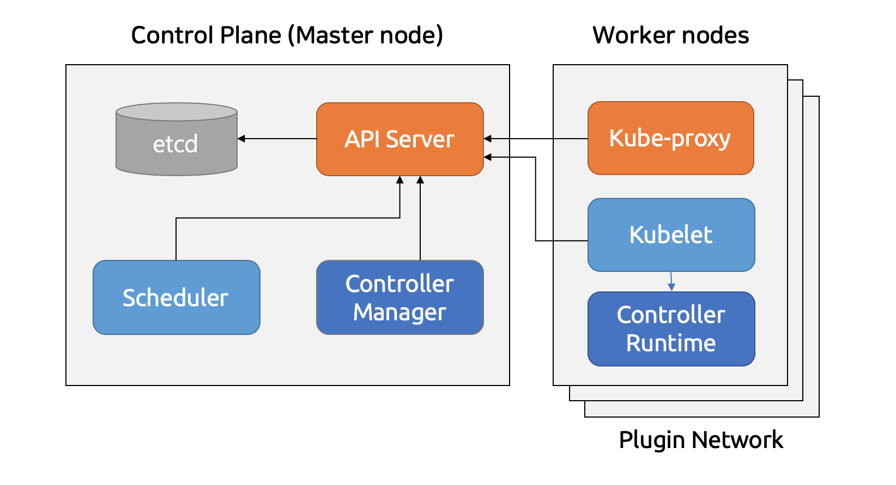
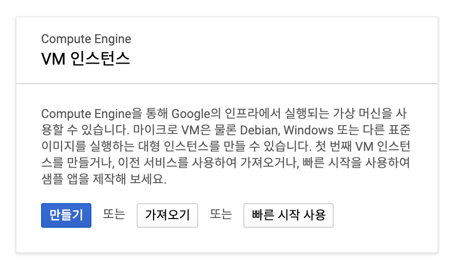
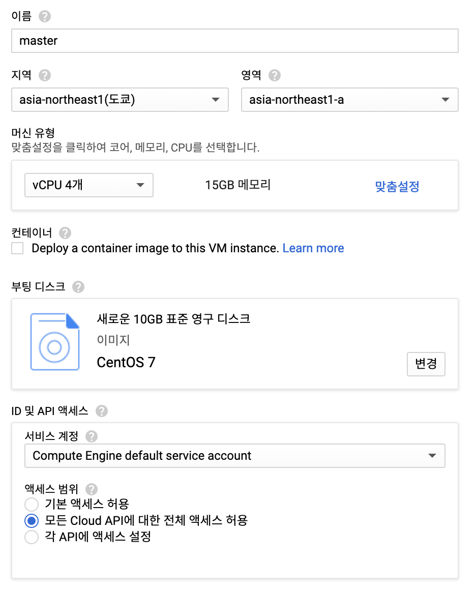
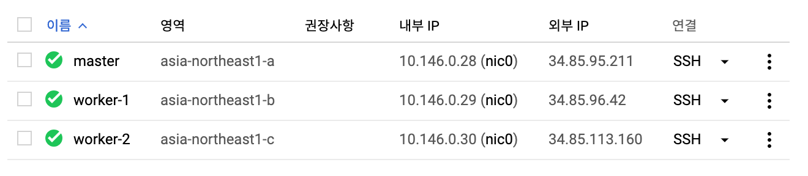
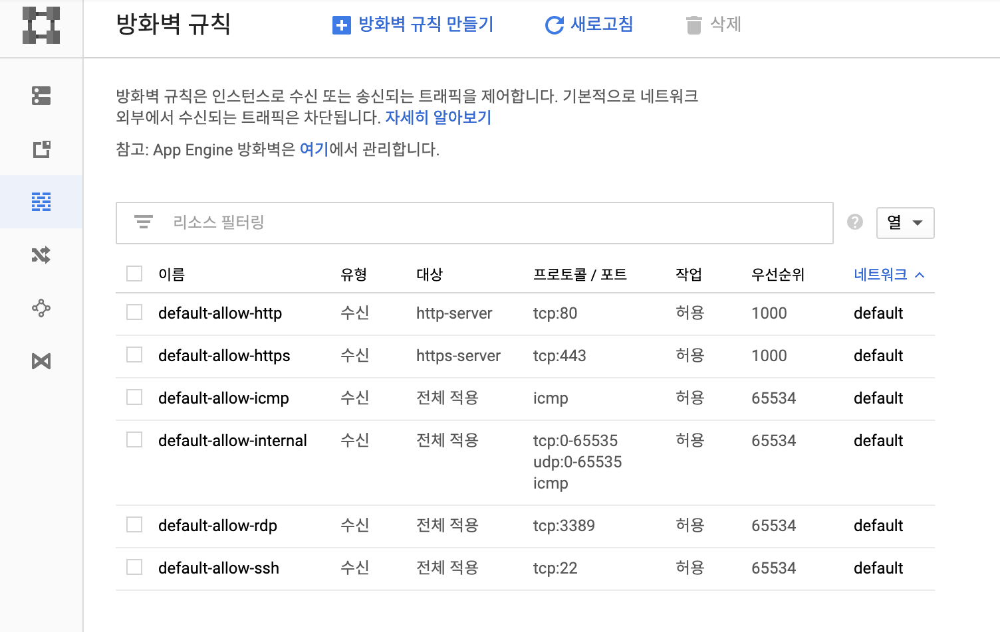
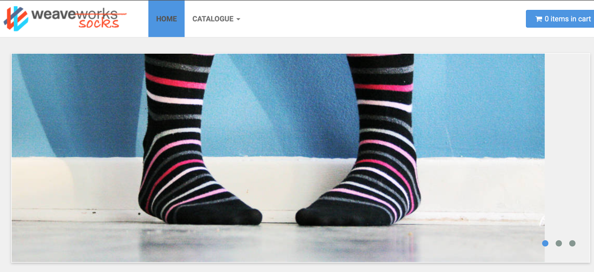

이제 개발자가 컨테이너 기반으로 애플리케이션을 개발하면서 도커(Docker)를 많이 사용합니다. 그리고 이러한 컨테이너를 쉽게 관리하고 테스트할 쿠버네티스(Kubernetes) 환경이 필요한 경우가 생기게 됩니다.
쿠버네티스 클러스터 중 가장 쉽게 접할 수 있는 건 Minikube 입니다. 하지만 Minikube 는 Master 하나로 이루어져 있어 부족한 점이 많습니다. 쿠버네티스의 다양한 기능을 살펴보려면 Master 노드와 Worker 노드 여러 개로 이루어진 실제 클러스터 환경을 구성할 필요가 있습니다.
물론 쿠버네티스 클러스터를 구성하는 것이 간단한 일은 아닙니다. 그래서 개발자들이 처음 쿠버네티스 클러스터를 구성할 때 많은 어려움을 겪습니다. 하지만 쿠버네티스에서 제공하는 kubeadm이라는 툴을 이용하면 비교적 쉽게 설치할 수 있습니다.
이번 포스트에서는 GCE 위에 Master 노드 하나, Worker 노드 둘로 이루어진 클러스터를 구성해보겠습니다.
쿠버네티스의 구조
설치를 진행하기에 앞서 우리가 구축할 시스템이 어떻게 구성되어 있는지 간단하게 알아보는게 좋겠습니다.

Worker 노드는 실제 Pod 이 실행되는 서버이고, Master 노드는 각 Worker 노드를 제어하는 서버입니다. 각 노드에는 쿠버네티스의 구성 요소가 돌아가고 있습니다.
API 서버는 작업 상태를 정의하고 조회할 수 있는 RESTful 웹 서비스를 제공하고, 쿠버네티스의 각 구성 요소는 API 서버를 거쳐 서로 통신합니다. 특히 쿠버네티스 오브젝트의 상태를 저장하는 etcd 는 API 서버를 통해서만 접근할 수 있습니다.
쿠버네티스는 현재 시스템을 사용자가 정의한 상태, 즉 사용자가 원하는 상태(어떤 Pod 이 몇 개가 떠있고, 어떤 Service 가 어떤 포트로 열려있고 등)로 맞춰줍니다. 그러려면 오브젝트의 현재 상태를 지속적으로 체크하고 상태를 제어해야 합니다. 컨트롤러 매니저(Controller Manager)에는 Replication, DaemonSet, Job, Service 등 다양한 오브젝트를 제어하는 컨트롤러가 존재합니다.
스케쥴러(Scheduler)는 노드의 정보와 알고리즘을 통해 특정 Pod 을 어떤 노드에 배포할 지 결정합니다. 대상 노드들을 조건에 따라 걸러내고 남은 노드는 우선 순위(점수)를 매겨서 가장 최적의 노드를 선택합니다.
위의 모듈은 Control Plane 인 Master 노드에 존재하지만, Kubelet 과 Kube-proxy 는 Worker 노드에 존재합니다. Kubelet 은 API 서버와 통신하며 Worker 노드의 작업을 제어하는 에이전트입니다. Kube-proxy 는 Pod 에 접근하기 위한 iptables 를 설정합니다. iptables 는 리눅스 커널의 패킷 필터링 기능을 관리하는 도구입니다. 이전에는 해당 패킷이 Kube-proxy 를 거쳐 지나갔기 때문에 proxy 라는 이름이 붙었지만, 지금은 패킷이 직접 통과하진 않습니다.
각 구성 요소에 대한 상세한 설명은 이후 포스트에서 알아보기로 하고, 다시 설치 과정으로 돌아갑시다.
준비하기
쿠버네티스는 3개월 마다 새로운 버전이 릴리즈 되고 해당 버전은 9개월 동안 버그와 보안 이슈를 수정하는 패치가 이루어집니다. 2019년 2월 현재 최신 버전인 1.13 버전으로 설치하겠습니다.
우리가 구성할 노드는 Master 노드 하나와 Worker 노드 두 개로, 총 세 개의 서버가 필요합니다.
쿠버네티스 노드로 사용할 서버의 사양을 확인합니다.
| 항목 | 사양 |
|---|---|
| CPU | 2 CPU 이상 |
| 메모리 | 2 GB 이상 |
| OS | CentOS 7, RHEL 7, Ubuntu 16.04+ etc. |
또한 각 서버는 다음 조건을 만족해야 합니다.
- 각 노드가 서로 네트워크 연결되어 있어야 합니다.
- 각 노드는 다음 정보가 겹치지 않아야 합니다.
- hostname:
hostname - MAC address:
ip link또는ifconfig -a - product_uuid:
sudo cat /sys/class/dmi/id/product_uuid
- hostname:
마지막으로, 각 노드가 사용하는 포트입니다. 각 포트는 모두 열려 있어야 합니다.
| 노드 | 프로토콜 | 방향 | 포트 범위 | 목적 | 누가 사용? |
|---|---|---|---|---|---|
| Master | TCP | Inbound | 6443 | Kubernetes API server | All |
| Master | TCP | Inbound | 2379-2380 | etcd server client API | kube-apiserver, etcd |
| Master | TCP | Inbound | 10250 | Kubelet API | Self, Control plane |
| Master | TCP | Inbound | 10251 | kube-scheduler | Self |
| Master | TCP | Inbound | 10252 | kube-controller-manager | Self |
| Worker | TCP | Inbound | 10250 | Kubelet API | Self, Control plane |
| Worker | TCP | Inbound | 30000-32767 | NodePort Services | All |
각 서버를 준비하는 방법은 여러 가지가 있겠지만 가장 쉽게 생각해볼 수 있는 건 VirtualBox 와 Vagrant 를 이용한 로컬 VM이나 AWS EC2 나 GCE 같은 퍼블릭 클라우드의 VM 을 사용하는 것입니다. 하지만 메모리가 넉넉하지 않으면 로컬에서 VM 세 개를 띄우는 건 부담일 수 있으므로, 이번 포스트에서는 GCE 를 사용해서 실습을 진행합니다.
Google Compute Engine
Compute Engine 은 Google Cloud Platform 의 VM 입니다. GCP는 처음 가입 시 1년 동안 사용할 수 있는 $300 상당의 크레딧을 제공하기 때문에 학습이나 간단한 테스트를 할 때 유용합니다.

먼저 만들기를 눌러 VM 을 생성합니다.

위 내용을 참고해서 VM 을 설정합니다.
- 지역: 어딜 해도 상관 없지만 가까운 도쿄로 하는 것이 속도가 빠릅니다.
- 영역: 지역에 문제 발생 시 피해를 최소화하기 위해 지역은 여러 영역으로 나뉘어져 있습니다. 각 노드를 다른 영역에 배치하는 것도 좋겠죠.
- 사양: 위에서 살펴 본 최소사양 이상이면 됩니다. 저는 무료 크레딧 사용이 이제 한 달도 안남아서 사양을 넉넉하게 잡았습니다.
- 부팅 디스크: CentOS 7을 선택합니다.
- ID 및 API 서비스: AWS의 IAM 권한 설정처럼 GCP도 원하는 서비스 API 마다 권한을 오픈해야 합니다. 학습 및 테스트에만 사용할 것이므로 편의상 모든 Cloud API 액세스를 허용합니다.

master, worker-1, worker-2 총 세 개의 VM 을 생성합니다. 조금 기다리면 VM이 모두 준비됩니다.
각 VM 을 접속하는 방법은 로컬에 설치해서 사용하는 gcloud 나 웹 상에서 콘솔로 바로 접속할 수 있는 Cloud SSH 가 있습니다. 이번 실습에서는 별 다른 설정 없이 바로 접속이 가능한 Cloud SSH 를 사용합니다. VM 이 생성되길 기다리는 동안 크롬 확장 프로그램인 SSH for Google Cloud Platform 을 설치하면 더 편하게 사용하실 수 있습니다.
설치하기
사전 작업하기
사전 작업은 master, worker-1, worker-2 모두 동일하게 진행합니다. 터미널 화면을 분할해서 동시에 작업할 수 있는 tmux 같은 유틸이 있으면 더 편하게 작업할 수 있습니다.
모든 설치 과정은 root 권한으로 진행합니다.
1 | sudo su - |
Swap 은 메모리가 부족하거나 절전 모드에서 디스크의 일부 공간을 메모리처럼 사용하는 기능입니다. Kubelet 이 정상 동작할 수 있도록 해당 기능을 swap 디바이스와 파일 모두 disable 합니다.
1 | swapoff -a |
swapoff -a: paging 과 swap 기능을 끕니다./proc/sys/vm/swappiness: 커널 속성을 변경해 swap을 disable 합니다./etc/fastab: Swap을 하는 파일 시스템을 찾아 disable 합니다.
각 노드의 통신을 원활하게 하기 위해 방화벽 기능을 해제합니다.
1 | systemctl disable firewalld |
SELinux(Security-Enhanced Linux)는 리눅스 보안 모듈로 액세스 권한을 제어합니다. 쿠버네티스에서는 컨테이너가 호스트의 파일시스템에 접속할 수 있도록 해당 기능을 꺼야 합니다.
1 | setenforce 0 |
RHEL 과 CentOS 7에서 iptables 관련 이슈가 있어서 커널 매개변수를 다음과 같이 수정하고 적용합니다.
1 | cat <<EOF > /etc/sysctl.d/k8s.conf |
br_netfilter 모듈이 활성화되어 있어야 합니다. modprobe br_netfilter 명령어로 해당 모듈을 명시적으로 추가하고, lsmod | grep br_netfilter 명령어로 추가 여부를 확인할 수 있습니다.
1 | modprobe br_netfilter |
컨테이너 실행 환경인 도커(Docker)를 설치하고 실행합니다. 쿠버네티스는 도커 외에도 여러가지 CRI(Container Runtime Interface) 구현체를 지원하기 때문에 도커에 종속적이지 않습니다.[1]
1 | yum install docker -y |
쿠버네티스 설치하기
이제 본격적인 설치 과정입니다. Kubeadm은 Kubelet 과 Kubectl 을 설치하지 않기 때문에 직접 설치해야 합니다. 리파지토리를 추가하고 설치 및 실행합니다. Kubectl 은 클러스터에게 명령을 내리기 위한 CLI 유틸입니다.
1 | cat <<EOF > /etc/yum.repos.d/kubernetes.repo |
이제 Master 노드에 컨트롤 구성 요소를 설치할 차례입니다. 해당 작업은 master 에서만 실행합니다. 설치 시 사용할 이미지를 먼저 다운로드 합니다.
1 | kubeadm config images pull |
마스터 노드를 초기화합니다.
1 | kubeadm init |
그럼 설치가 진행되고 마지막에 다음과 비슷한 로그가 출력됩니다.
1 | Your Kubernetes master has initialized successfully! |
여기서 일반 사용자가 kubectl 을 사용할 수 있도록 로그 중간에 있는 명령어를 복사해서 실행합니다.
1 | mkdir -p $HOME/.kube |
맨 마지막 라인의 명령어는 워커 노드를 해당 클러스터에 추가하는 명령어입니다. 해당 명령어를 복사해서 worker-1, worker-2 노드에서 수행합니다.
1 | kubeadm join 10.146.0.25:6443 --token yuaea3.d7m8hkpvazrbv5yw --discovery-token-ca-cert-hash sha256:c6a7121c5d5207179f67d913fa654441137f76027ad0f4e23724f0202b280eec |
만약 해당 커맨드를 복사해놓지 않고 지워진 경우에는 다음과 같이 토큰을 확인할 수 있습니다.
1 | kubeadm token list |
해당 토큰은 24시간 동안만 사용할 수 있습니다. 새 토큰이 필요한 경우는 다음 명령어를 실행하면 됩니다.
1 | kubeadm token create |
Pod network add-on 설치하기
Pod 은 실제로 여러 노드에 걸쳐 배포되는데, Pod 끼리는 하나의 네트워크에 있는 것처럼 통신할 수 있습니다. 이를 오버레이 네트워크(Overlay Network)라고 합니다.
오버레이 네트워크를 지원하는 CNI(Container Network Interface) 플러그인을 설치해보겠습니다. CNI 에는 여러 종류가 있는데, 이번 실습에서는 Weave 를 이용합니다.
Master 노드에서 다음과 같이 설치합니다.
1 | kubectl apply -f "https://cloud.weave.works/k8s/net?k8s-version=$(kubectl version | base64 | tr -d '\n')" |
CNI를 설치하면 CoreDNS Pod 이 정상적으로 동작하게 됩니다.
다음 명령어로 각 노드와 상태를 확인할 수 있습니다. 처음엔 상태가 NotReady 라고 나올 수 있지만 잠시 기다리면 모두 Ready 상태가 됩니다.
1 | kubectl get no |
설치 확인하기
다음 명령어로 쿠버네티스의 구성 요소가 모두 동작하는 것을 확인할 수 있습니다.
1 | kubectl get componentstatuses |
쿠버네티스의 구성 요소가 Pod 으로 어떤 노드에 떠있는지 확인할 수 있습니다. etcd, API server, Scheduler, Controller Manager, DNS Server 는 master 에서 실행됩니다. Kube proxy 와 Weave 는 각 worker 에서 실행됩니다.
1 | kubectl get po -o custom-columns=POD:metadata.name,NODE:spec.nodeName --sort-by spec.nodeName -n kube-system |
이제 설치가 잘 되었는지 Pod 을 배포하고 동작을 확인해보겠습니다.
- 간단한 Pod 배포하기
- 복잡한 Microservices 애플리케이션 배포하기
간단한 Pod 배포하기
먼저 간단한 Pod 을 배포해서 동작을 확인해봅시다. 다음과 같은 pod-test.yaml 파일을 생성합니다.
1 | apiVersion: v1 |
해당 Pod 이 실행되면 busybox 라는 경량 리눅스 이미지에 Hello Kubernetes! 라는 로그가 잠시 동안 출력되고 Pod 은 종료될겁니다.
이제 해당 Pod 을 배포합니다.
1 | kubectl apply -f pod-test.yaml |
해당 Pod 이 정상적으로 실행된 것을 볼 수 있습니다.
1 | kubectl get po |
로그도 확인해봅니다.
1 | kubectl logs myapp-pod |
복잡한 Microservices 애플리케이션 배포하기
이번에는 Sock Shop 이라는 복잡한 마이크로서비스 애플리케이션을 배포해보겠습니다. 이 온라인 양말 가게 애플리케이션은 오픈 소스로 마이크로서비스 데모 애플리케이션입니다.[2]
다음 명령을 이용해 Namespace 를 만들고 각종 구성 요소를 배포합니다. complete-demo.yaml 파일 안에는 애플리케이션에 필요한 Deployment, Service 등이 정의되어 있습니다.
1 | kubectl create ns sock-shop |
다음 명령어로 새롭게 배포된 구성 요소를 모두 확인할 수 있습니다.
1 | kubectl get all -n sock-shop |
모든 Pod 이 Running 상태가 되면 front-end 서비스의 NodePort 를 확인합니다. NodePort 는 해당 서버(노드)의 포트와 Pod 을 연결해서 사용하는 방식입니다.
1 | kubectl get svc front-end -n sock-shop -o wide |
따라서 노드의 외부 IP와 포트 번호를 이용해서 접속할 수 있습니다. VM의 외부 IP는 VM 목록에서 확인할 수 있습니다. 그럼 http://34.85.95.211:30001 와 같은 주소가 됩니다.
하지만 접속 전에 해당 포트가 열려 있어야 합니다. GCP 서비스 중 VPC 네트워크 > 방화벽 규칙 메뉴로 들어가 방화벽 규칙을 새로 추가합니다. 메뉴 찾기는 상단의 검색창을 이용하면 쉽습니다.

이름은 http-sock-shop 와 같이 적당히 주고 수신 방향으로 합니다. 대상은 편의상 '네트워크의 모든 인스턴스’를 선택하고, IP 범위는 0.0.0.0/0 으로 설정합니다. 프로토콜 및 포트는 tcp 를 선택하고 위에서 확인한 NodePort 를 설정합니다.

그러면 http://34.85.95.211:30001 로 접속할 수 있게 됩니다.
마무리
이번 포스트에서는 GCE 를 이용해서 간단하게 서버 자원을 확보하고 Kubeadm 을 이용해 클러스터를 구성했습니다. 그 전에 쿠버네티스의 구성 요소도 간단하게 살펴봤습니다.
물론 직접 컨트롤하지 않고 사용하는 것이 위주라면 GKE(Google Kubernetes Engine)와 같이 완전관리형(Fully-managed) 쿠버네티스 서비스를 이용하는 것도 좋습니다만, 직접 수정하면서 테스트할 수 있는 클러스터를 구축해보는 것도 좋겠습니다.
다음 포스트에서는 쿠버네티스 기본 개념을 상세하게 다뤄보려고 합니다.
참고
- Creating a single master cluster with kubeadm
- Installing kubeadm
- Sock Shop - Microservices Demo Application